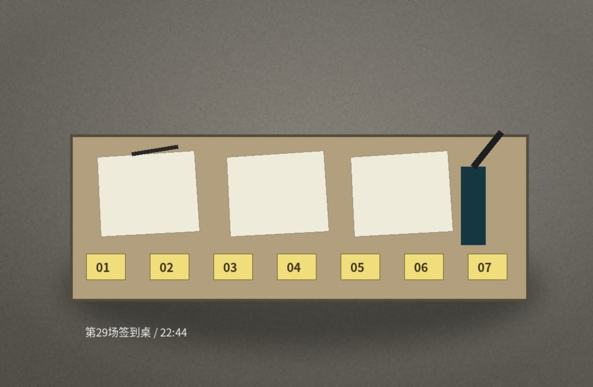
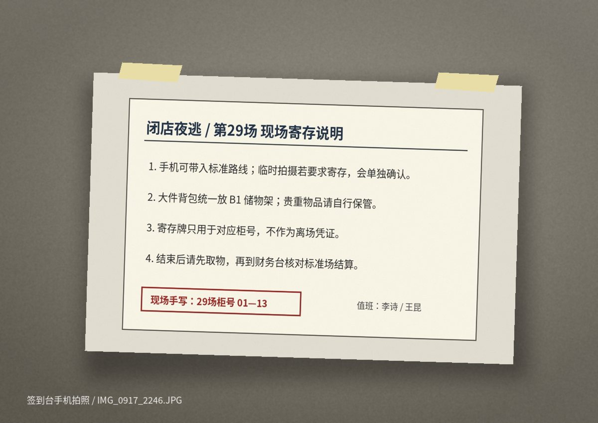

闭店夜逃第一次来 / 到场说明
第29场签到22:40—23:10
到场、穿着和寄存
22:40 起从商场西门下到 B1。正门闭店后会拉闸，不要在一楼主入口等工作人员。
签到签到桌就在员工通道外侧，桌上会放黄色柜号牌。第29场使用 01—13。
寄存大件包统一放 B1 储物架。手机可带入标准路线；临时拍摄如果要求寄存，会另外确认。
穿着建议长裤和运动鞋。低位通道、儿童区旧地砖都很容易蹭灰，新白鞋真的不建议。
散场夜场结束时地铁通常停运。群里经常有人拼车，网约车上车点在西门路口，不在商场门口。
群里最常见的一句不是“恐不恐怖”，是“穿旧鞋”。第27场以后，这句话已经被运营直接印进海报。


签到桌旁的寄存说明
照片是现场手机拍的，不是电子原稿。右下角手写的“01—13”每场会重写；值班名字也会跟着换。
第29场写的是李诗 / 王昆。这里的“寄存牌只用于对应柜号，不作为离场凭证”后来在客服记录里又被解释过一次。
夜宵不属于活动承诺。现场忙的时候可能只发面包和矿泉水；论坛里对这件事的评价比密室本身还一致。